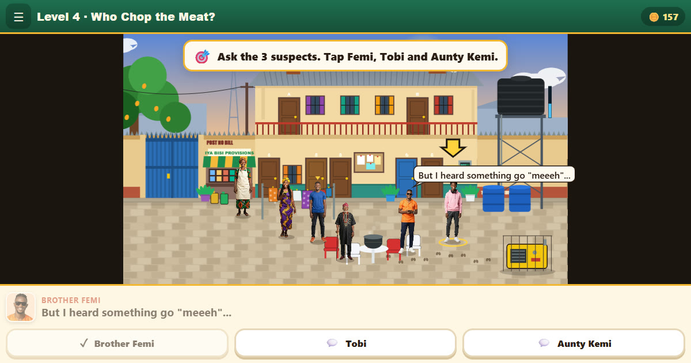

🍖 Level 4: Who Chop the Meat?
“Who Chop the Meat?” = Who ate the meat? The last piece of meat is gone. Be the detective!
▶ Play Level 4 free
What happens
The last piece of meat is missing from the pot. Interview the three suspects — Brother Femi, Tobi and Aunty Kemi — look at the clues, and name the real thief. (It is not who you think.)
What players practise
- Listening to different stories
- Using clues to reach an answer
Pidgin lines from this level
Every Pidgin line in the game also shows plain English. A few from this level:
Narrator
Be the detective! 🔍
Ask everyone what they saw.
Tobi
I was filming. Look my video — something hairy ran past! 🎥
I was filming. Look at my video — something hairy ran past!
Brother Femi
Ehn?! Me wey dey diet?! 😭
What?! Me, who is on a diet?!
Tobi
Na content I dey chop, no be meat! 😂
I only eat content, not meat!
Aunty Kemi
Hahaha! That goat get sense pass all of us! 😂
Hahaha! That goat is smarter than all of us!
Chief
Well done, Detective! Next time, I go cover my pot. 😅
Well done, Detective! Next time I'll cover my pot.
More words: Naija Pidgin words & meanings.
Did you know?
"Who chop the meat?" means "Who ate the meat?" In Pidgin, "chop" means to eat.
When you win
“Case closed, Detective! It was Senator the goat all along.”